切割块体
block cut 命令用于进一步切割由 block create 或 block generate 命令创建的实体，以定义节理、断层、孔洞或开挖区。BLOCK CUT 命令可创建单个断层、节理组或离散裂隙网络。此外，还可利用切割逻辑，按导入的几何曲面或隧道进行切割，创建不同块体几何形状。后续各小节分别介绍这些功能。
节理与节理组
按节理组切割命令（block cut joint-set） 命令可进行单次切割或多次平行切割。可以使用统计参数改变方位、间距和延续性，以匹配记录的节理数据。
本节首先演示使用 BLOCK CUT JOINT-SET 命令进行单次切割。应事先规划，以优化节理创建顺序。通常先切割界定开挖几何形状的节理（见内部边界形状（Internal Boundary Shapes）），再创建次要节理或节理组。贯通断层通常最后定义。
BLOCK CUT JOINT-SET 命令的主要关键字是 dip、dip-direction 和 origin。如果不使用其他关键字，该命令将按指定方位创建一个贯穿模型的平面。原点可以是平面上的任意一点。图 1（Figure 1） 展示了倾角和倾向与 3DEC 坐标轴的关系。倾角范围为 0 至 90◦，倾向范围为 0 至 360º。

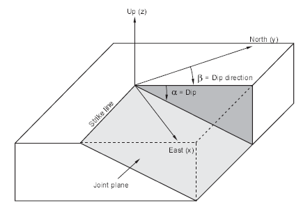
图 1：描述倾斜平面产状的术语：倾角 α 从水平（xy）平面向下量取为正；倾向 β 从北向（y）顺时针量取为正
通过 block hide 命令，可控制 BLOCK CUT JOINT-SET 命令所形成切面的连续性。BLOCK CUT JOINT-SET 命令只会切割当前可见的块体。
下例演示创建非贯通节理。
创建非贯通竖直节理
model new
; 创建一个块体
block create brick 0,1 0,1 0,1
; 进行水平切割
block cut joint-set dip 0 dip-direction 0 origin 0,0,.5
; 隐藏底部块体
block hide range plane dip 0 dip-direction 0 origin 0,0,.5 below
; 仅对顶部块体进行竖直切割
block cut joint-set dip 90 dip-direction 90 origin .5,0,0
; 显示所有块体
block hide off
图 2（Figure 2） 显示了本例的完整模型和节理结构图。注意，竖直节理没有穿透底部块体。3DEC 自动为水平节理分配节理 ID 2，为竖直节理分配节理 ID 3。如有需要，可以通过 jointset-id 关键字控制节理 ID。例如：
block cut dip 0 dip-direction 0 origin 0,.5,0 jointset-id = 1000
将创建 ID 为 1000 的水平节理。
节理面和接触的 ID 按创建顺序依次赋予。因此，如果定义两个相交断层，其交线上的边—边接触将采用后定义断层的节理 ID。如果要为不同断层赋予不同属性，定义顺序就十分重要。构成节理大部分面积的面—面接触，其属性可使用 设置块体接触属性（block contact property） 命令赋予，并通过节理 ID 或方位识别需要改变的节理。难点在于为节理和断层交线处产生的边—边接触赋予属性编号。使用节理 ID 为边—边接触赋予属性编号很容易；按方位赋予则很困难，因为这些接触的方位与形成它们的两个相交平面都不同。程序有一个 PLOT 选项，可绘制节理材料属性。该图可用于检查边—边接触是否赋予了正确属性。

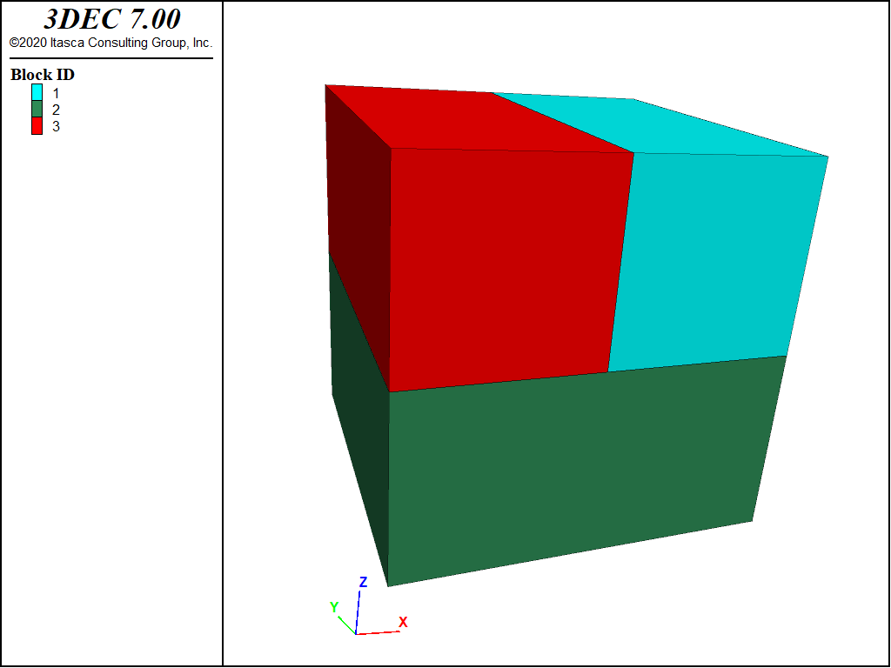
图 2：使用 BLOCK CUT 和 BLOCK HIDE 命令创建的模型：完整实体视图

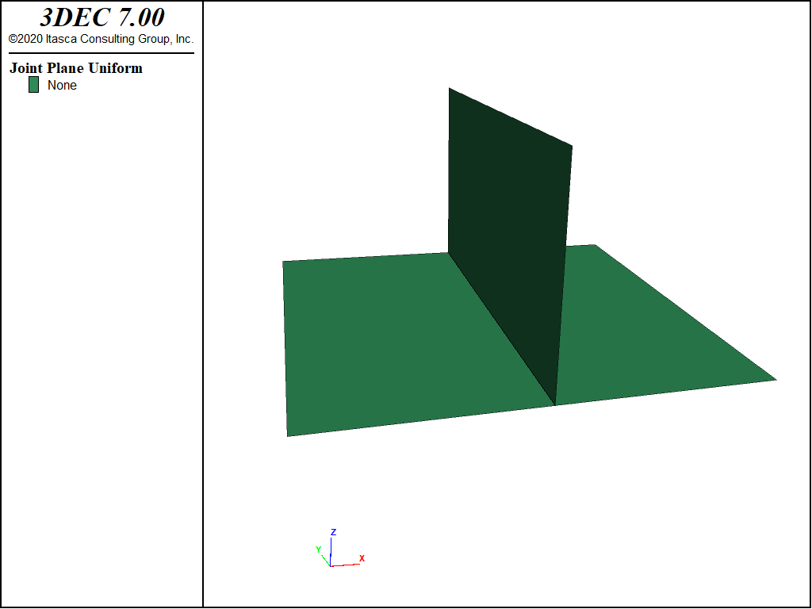
图 3：使用 BLOCK CUT 和 BLOCK HIDE 命令创建的模型：节理结构视图
可使用 block join 命令形成凹块体。被连接的各块体本身仍为凸块体，但连接逻辑会锁定它们之间的接触面。例如，在前述示例末尾添加以下命令：
block hide range pos-x 0.5 1.0 pos-y 0 1 pos-z 0.5 1.0
block join on
图 4（Figure 4） 显示了所创建的凹块体。注意，只能连接可见块体。

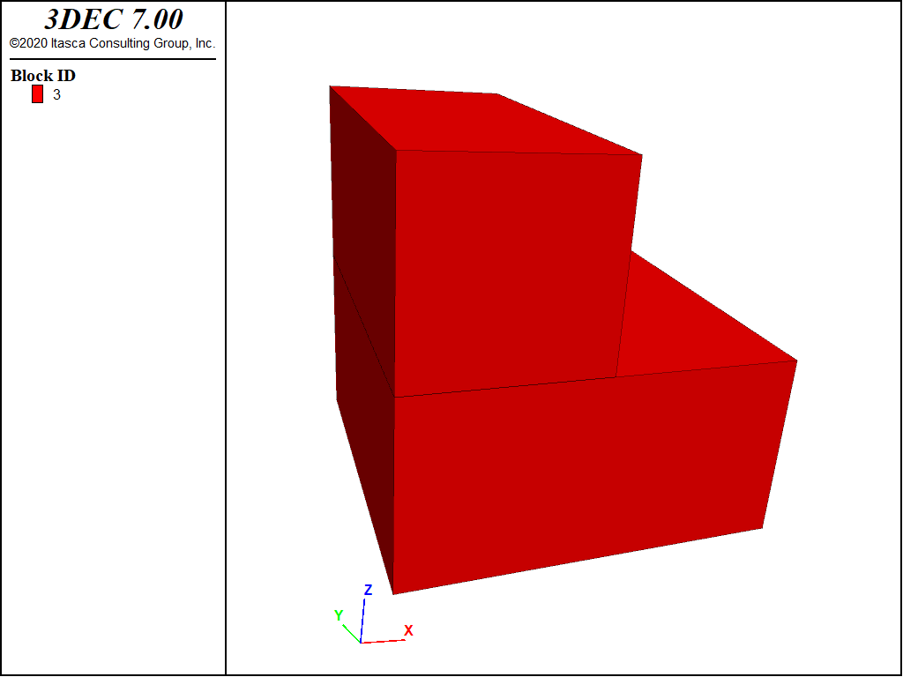
图 4：使用 BLOCK JOIN 命令创建的凹块体
图形屏幕上，连接块体采用相同颜色显示。此外，连接块体之间的接触被标识为主—从（m-s）接触。输入 block contact list 可检查接触类型。注意，如果“从属”块体与同一“主”块体连接，它们之间会自动连接。例如，若块体 A 与块体 B 已连接，块体 A 与块体 C 也已连接，则块体 B 将自动与块体 C 连接。
BLOCK CUT JOINT-SET 命令还可根据实测参数（即节理倾角、倾向、间距和延续性）自动生成一组节理。通过隐藏选定块体，可以生成一组非贯通节理。下例创建一个同时包含缓倾和陡倾节理组的节理岩质边坡，还创建两条非贯通裂隙，在边坡中界定一个岩石楔形体（见图 5（Figure 5））。
model new
block create brick 0 80 -30 80 0 50
; 缓倾裂隙面，连续分布
block cut joint-set dip 2.45 dip-direction 235 ori 30 0 12.5
block cut joint-set dip 2.45 dip-direction 315 ori 35 0 30
; 大倾角片理面，连续分布
block cut joint-set dip 76 dip-direction 270 spac 16 num 3 ori 30,0,12.5
; 相交不连续面，非连续分布
block hide range pos-x 0,80 pos-y 0,50 pos-z 0,10
block hide range pos-x 55,80 pos-y 0,50 pos-z 0,50
block cut joint-set dip 70 dip-direction 200 ori 0 35 0
block cut joint-set dip 60 dip-direction 330 ori 50 15 50
block hide off
block hide range pos-x 0,30 pos-y -30,80 pos-z 13,50

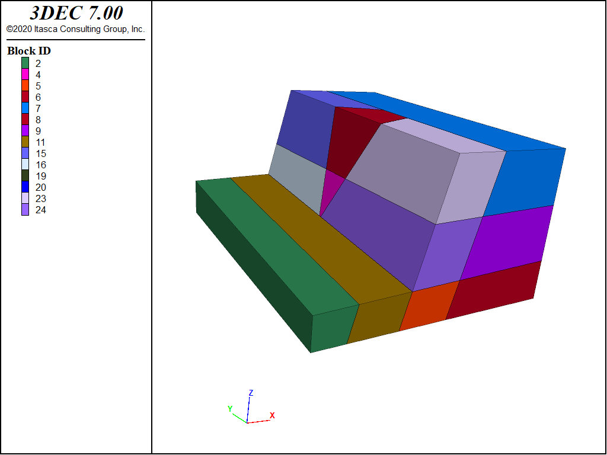
图 5：含贯通和非贯通节理的岩质边坡
请记住，节理在 3DEC 模型中显示为平面片段；拟合不规则节理结构可能需要许多片段。建模人员必须选择 3DEC 节理几何与实际节理分布相匹配的细化程度。也可通过节理材料模型考虑几何不规则性对节理响应的影响（例如沿节理改变属性）。
关于节理生成，最后还需说明一点：使用连续介质程序时，通常可利用开挖形状的对称条件来减小模型尺寸。而非连续介质程序中不易施加对称条件，因为除特殊情况外，不连续特征的存在会破坏对称性。例如，不能在图 5（Figure 5） 所示模型中施加竖直对称平面，因为模型中的节理并不与竖直轴平行。
离散裂隙网络
使用 按节理组切割命令（block cut joint-set） 命令创建节理时，可以为节理间距和方位指定一定统计变异。若先生成离散裂隙网络（DFN），再用它切割 3DEC 块体，就可以模拟复杂得多的裂隙集合。
通过 按节理组切割命令（block cut joint-set） 命令建模的断层，通常表示确定性断层，即已测绘的断层或裂隙，并通过指定位置、倾角和倾向，在模型中显式表示。另一种方法是随机表示断层。采用这种方法时，不显式模拟特定断层，而是定义一组统计参数，并根据这些统计输入生成节理组。这样，节理不代表某条具体测绘节理，而且节理组不是唯一的——不同随机实现均可满足统计准则。
离散裂隙网络（DFN）模型是对节理的统计描述。一个 DFN 模型可以有多个随机实现。一个 DFN 随机实现是一组裂隙，其特征服从该 DFN 模型的统计描述。随后，可使用 3DEC 模拟单个随机实现。建议使用不同随机实现运行多个 3DEC 模型，以检验模型对不同随机 DFN 可能产生的完整响应范围。
与离散裂隙网络有关的命令、FISH 和理论，见本文档的 DFN 部分（DFN section of this documentation）。
下面介绍一个简单示例，说明如何创建 DFN 并用它切割 3DEC 模型。
更高级的示例／教程见离散裂隙网络（高级）（Discrete Fracture Network (Advanced)）示例。
DFN 示例
本例首先创建 DFN。创建 DFN 之前必须指定模型域。本例通过 model domain extent -50 50 命令，将 DFN 域设为在正负两个方向上各延伸 50 个单位（边长 100 个单位）。如果只提供两个数值，则假定模型域在 x、y 和 z 方向的尺寸相同。
在 3DEC 中创建 DFN 最简单的方法，是先生成一个模板。DFN 模板是一组用于生成随机离散裂隙网络的统计参数，包括尺寸分布、位置分布和方位分布。默认情况下，DFN 模板采用以下属性：裂隙位置均匀分布，方位均匀分布（倾角介于 0^{circ} 与 180^{circ} 之间，倾向介于 0^{circ} 与 360^{circ} 之间），尺寸服从指数为 4 的负幂律分布。如果不指定尺寸限制，裂隙尺寸范围为 1.0 至 infty。
本例指定一个模板名称，采用指数为 3 的幂律分布，并将裂隙尺寸（圆盘直径）限制为 1 至 100。同时将位置和方位设为均匀分布。通过以下命令完成：
fracture template create 'dfn_template' size power-law 3 size-limits 2 20 ...
position uniform orientation uniform
使用之前创建的 DFN 模板，可以在先前指定的域内生成一组裂隙。生成过程持续到满足预定终止准则。本例采用密度（P32 值）0.1 作为终止准则。有关 DFN 密度的更多信息，请参阅DFN 概述（DFN Overview）。生成的 DFN 见图 6（Figure 6）。
最后，将近乎平行且相距很近的裂隙合并为单个较大裂隙。这有助于在利用 DFN 切割块体模型中的节理时，避免 3DEC 形成很薄的块体。

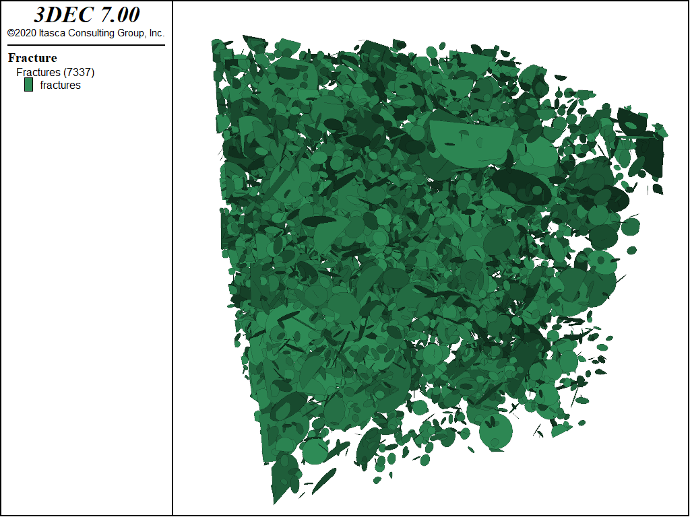
图 6：生成的 DFN
创建块体模型之前，必须使用 02 命令设置容差。受影响的容差包括：（1）网格点之间的最小距离；（2）子接触的最小面积（tolxtol）；（3）连接已连接块体网格点的容差；（4）选择公共平面附近顶点的容差。atol 的默认设置为模型在 x、y 和 z 方向平均尺寸的 0.0012 倍。本例中，该默认值过大，因此需要更小的值。
然后创建一个 10x10x10 的块体。通常认为，DFN 域的尺寸应大于所关注岩体的尺寸。这是因为某些裂隙的质心虽位于岩体之外，但裂隙仍会延伸入岩体。如果 DFN 域与岩体尺寸相同，就会遗漏这些裂隙片段。为考虑这一点，本例将 DFN 域在 x、y 和 z 方向的范围设为正负 50。
现在可使用以下命令，根据先前创建的 DFN 生成一组不连续面（节理）：block cut dfn name 'my_dfn'。块体使用名称为 my_dfn 的 DFN 切割。生成的 3DEC 模型见图 7（Figure 7）。

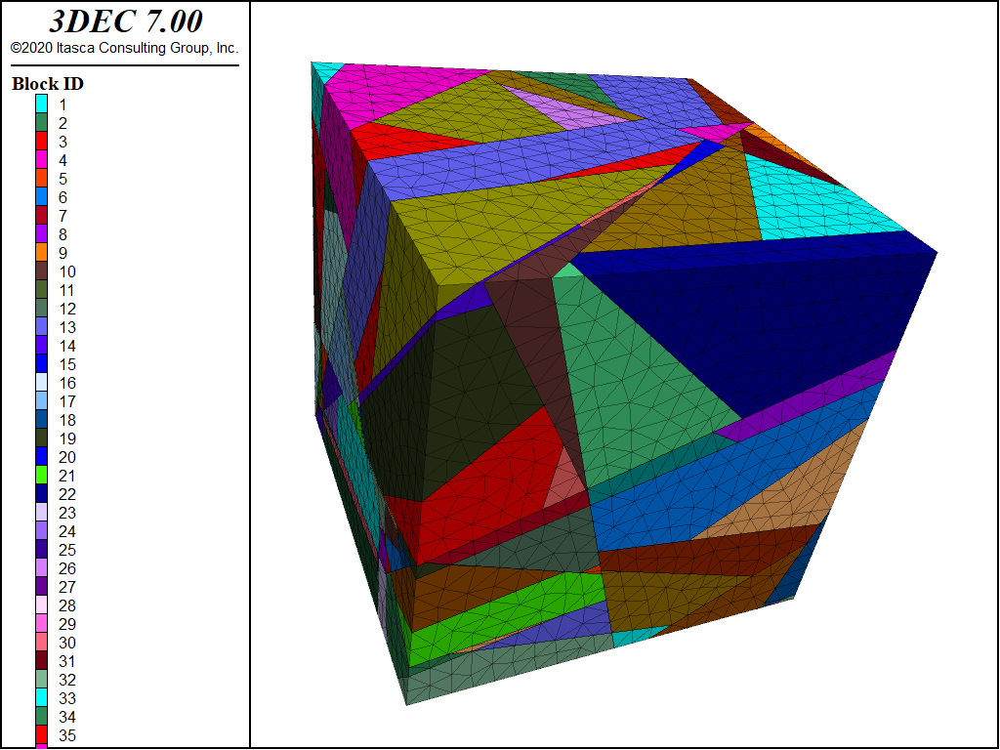
图 7：切割后的块体
在 3DEC 中，节理必须将块体切分为两部分，不能只切入块体的一部分。因此，利用 DFN 切割节理时按以下方式进行：
- 将 DFN 中的节理按尺寸从大到小排序
- 对于每条节理，隐藏所有不与该节理接触的块体
- 使用该节理切割其余块体
这一流程可尽量减少不必要的切割；不过，由于切面必须完全切分块体，3DEC 模型中的许多节理会大于 DFN 中相应的节理。可以通过为节理的不同部分指定不同节理属性，解决这一问题。
指定节理属性之前，需要将块体离散为网格单元。这也会离散节理表面，从而可以为每个节理面的不同部分赋予不同属性。使用 0 命令生成边长为 1 个单位的四面体网格单元。
现在可以赋予节理材料属性。使用专门的 DFN 命令，可以区分 DFN 圆盘内部与外部的节理材料。下图说明了这一思路。

每个 3DEC 节理在划分网格后均由子接触构成。如图所示，子接触可能位于 DFN 圆盘内部或外部。使用 range dfn-3dec，可以为内部子接触赋予不同的材料属性。
在图中添加节理平面（Joint Plane）绘图项，即可方便地绘制节理。如果只希望查看 3DEC 节理中与实际 DFN 对应的部分，可以在绘图项列表（Plot Item List）中右键单击 Joint Plane 绘图项，选择“添加范围元素…（Add Range Element …）”，然后从左侧的“可视（Visual）”列表选择“DFN 距离（DFN Distance）”。取消勾选“非（Not）”，勾选 my_dfn，并输入一个略大于 0 的距离（Distance）（例如 0.01）。所得 DFN 节理图应与图 9（Figure 9） 相似。

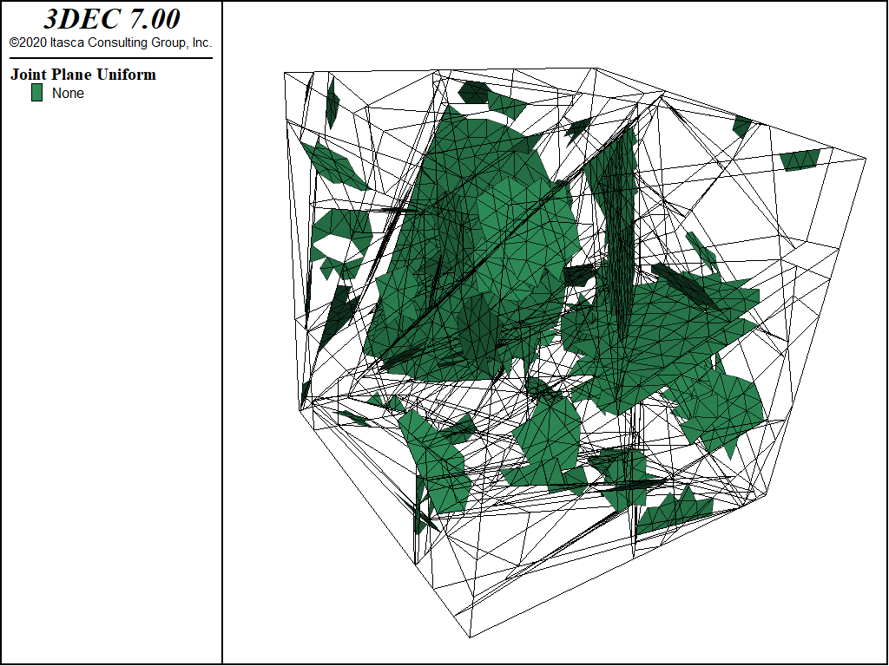
图 9：切割后模型中的节理
dfn.dat
; -- 展示如何在 3DEC 中利用 DFN 切割节理的算例
;
model new
model random 10000
model domain extent -50 50
;
; -- 生成 DFN --
fracture template create 'dfn_template' size power-law 3 size-limits 2 20 ...
position uniform orientation uniform
;
fracture generate dfn 'my_dfn' template 'dfn_template' mass-density 0.1
;
; 合并距离较近的近似平行裂隙
fracture combine angle 5 distance 0.1 merge
;
model save 'dfn'
;
===============================================
block tolerance 0.02
;
; 创建块体
block create brick -10 10
;
; 添加与 id 为 1 的 DFN 对应的节理
block cut dfn name 'my_dfn'
;
; 将块体离散为边长为 1 的四面体网格单元。
block zone generate edgelength 1
;
; 设置节理材料参数
block contact property friction 30 cohesion 1000
block contact property cohesion 0 range dfn-3dec 'my_dfn'
;
model save 'blocks'
创建内部边界形状
使 3DEC 模型与问题区域相匹配时，还必须定义与实际问题边界形状一致的多面体边界。这些边界可以是表示开挖区或孔洞的内部边界，也可以是表示土坝等人工结构或山坡等自然特征的外部边界。如果实际问题的边界复杂，必须评估简化是否会影响需要回答的问题，即较简单的几何形状是否足以再现重要机制。
模型模拟中需要表示的全部实际边界（包括稍后阶段将添加的区域或创建的开挖区），都必须在求解过程开始之前定义。顺序分析中后续添加的结构，其形状必须预先定义，然后通过 BLOCK EXCAVATE 命令“移除”。使用 BLOCK FILL 命令可重新添加已开挖块体。注意，只有可变形块体能够开挖和填充。
使用以下命令切割边界形状：
BLOCK CUT JOINT-SET
BLOCK CUT TUNNEL
BLOCK CUT GEOMETRY
每条命令将多面体切割为一个或多个片段，这些片段共同组成所需形状。按节理组切割命令（block cut joint-set） 命令创建平面节理片段，详见节理与节理组（Joints and Joint Sets）。切割隧道命令（block cut tunnel） 命令在块体中切割由前后两个端面定义的形状。按几何切割区块命令（block cut geometry） 命令根据导入的几何曲面切割块体。
Block Cut Tunnel 命令
切割隧道命令（block cut tunnel） 命令创建隧道，其边界由连接两个端面（指定为 face-1 和 face-2）的平面片段构成。隧道端面形状由任意数量的顶点规定，坐标依次为 (x1,y1,z1)、(x2,y2,z2)、(x3,y3,z3) 等。两个端面必须具有相同数量的顶点；端面可以位于模型内部或外部。
下例给出创建马蹄形隧道的简单示例。使用 block delete 命令删除隧道区域（定义为分组“exc”）。生成的隧道见图 10（Figure 10）。
使用 TUNNEL 命令创建的隧道
model new
block create tunnel radius=2 length=-10,10 radius-ratio=3.0 ...
dip=0 dip-direction=0 ...
block-radial=2 block-tangential=1 block-axial=3
block delete range pos-x -2,2 pos-y -10,10 pos-z -2,2

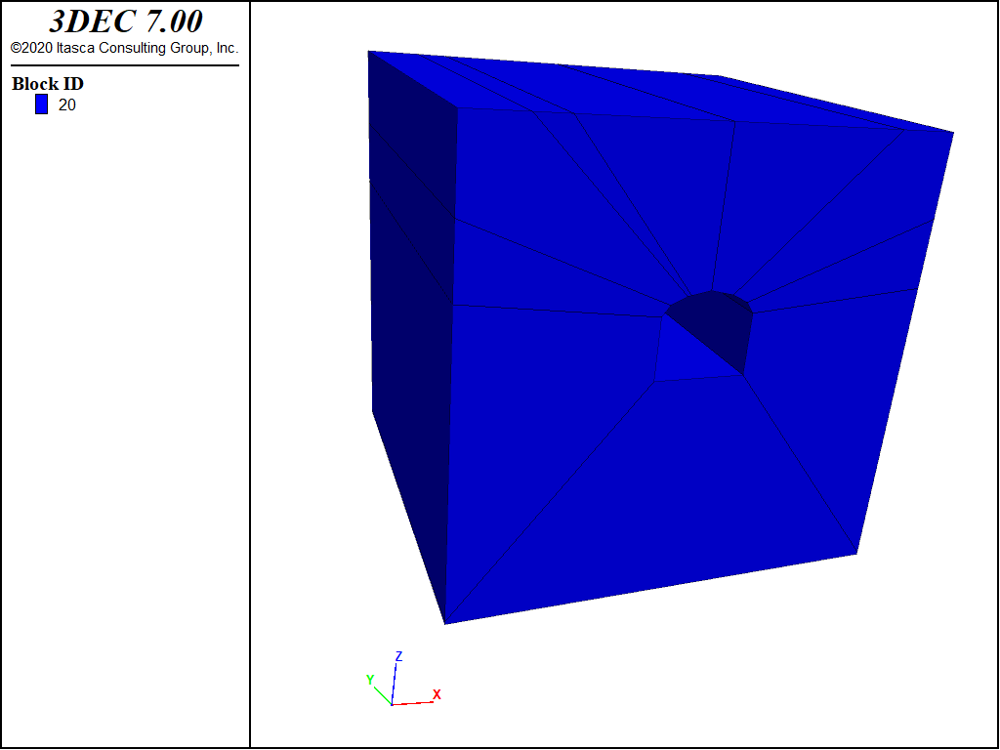
图 10：使用 TUNNEL 命令创建的隧道
通常，应在开挖隧道之前使模型达到平衡。用户必须注意，初始平衡计算期间，隧道边界上的虚拟节理不应影响模型响应。如果使用 BLOCK CUT TUNNEL 命令，虚拟节理处的块体会自动连接。如果通过 BLOCK CUT JOINT-SET 命令创建虚拟节理，则建议使用 block join 命令，连接由虚拟节理分隔的块体。使用 block contact list 可识别接触是否为连接块体之间的主—从（m-s）接触。
Block Cut Geometry 命令
按几何切割区块命令（block cut geometry） 命令可用于切出更复杂的形状。通常先使用第三方程序（例如 Rhino3D 或 Autocad）创建几何曲面，再导入 3DEC。几何曲面通常是定义某个连续三维表面的三角形或四边形集合。3DEC 接受的文件格式为 .dxf 和 .stl。也可以在 3DEC 内部使用命令和 FISH 创建几何曲面。更多详情见程序指南中的 :ref:`几何体 <geometry> 部分。
几何体导入或创建后，可用于切割 3DEC 块体。几何曲面的每个面片都代表一条“节理”，并切割其接触到的所有块体。通过这种方式，几乎可以在 3DEC 模型中切出任意几何形状。
警告：含有大量近乎平行面的复杂几何体，会产生大量切割，并可能形成许多薄片状块体，导致模型运行时出现数值问题。建议在用几何曲面切割 3DEC 模型之前，尽量简化曲面。
与 tunnel 命令不同，使用 BLOCK CUT GEOMETRY 命令切割的块体不会自动连接。用户需要在切割后自行连接“构造”节理。
下例演示 BLOCK CUT GEOMETRY 命令的使用。使用该命令之前，用户必须先通过 设置域范围命令（domain extent） 命令指定模型域。命令后跟模型在 x、y 和 z 方向的上下界。如果只给出两个数值，则假设 y 和 z 方向范围与 x 方向相同。模型域只需大于模型即可；设置模型域是为了提高切割算法的效率。本例还使用 block tolerance 命令。3DEC 通过容差判断哪些块体可以切割、哪些不能切割。如果两个切面间距小于容差，就不执行切割，以避免形成极小块体。默认容差为块体尺寸的 1%。但对于此类复杂形状，往往必须减小容差，才能完成全部切割。本例采用 0.001（容差的单位为长度）。需要切出的几何体是一个椭球，如图 11（Figure 11） 所示。剖面视图（图 12（Figure 12））显示切割成功完成。
model new
model domain extent -10 10
geometry import 'ellipsoid.stl'
block tolerance 1e-3
block create brick -2 2 -2 2 -1 6
block cut geometry 'ellipsoid'

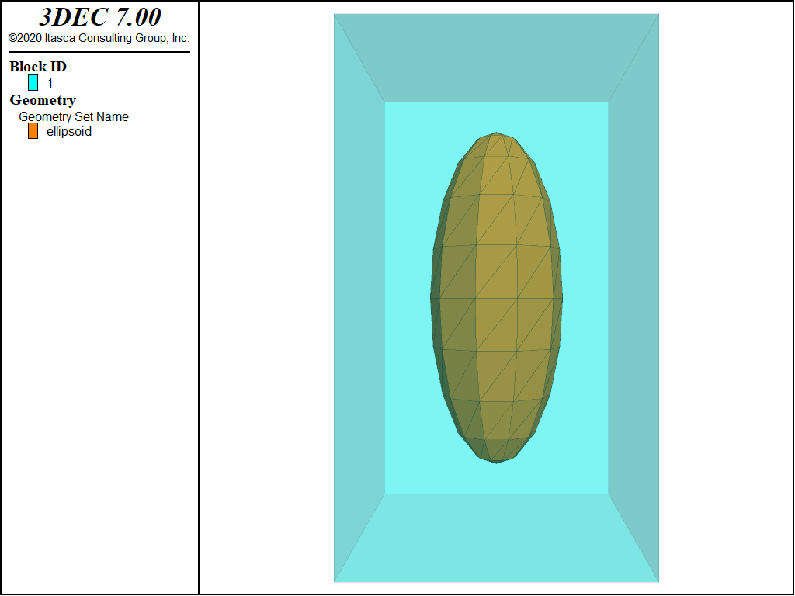
图 11：导入的几何体与切割前的块体

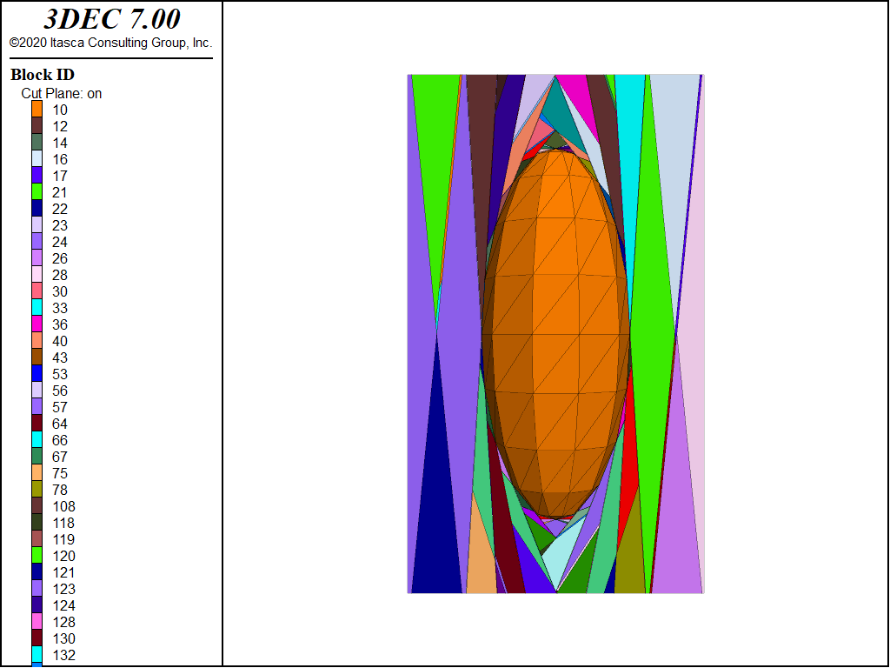
图 12：导入的几何体与切割后的块体剖面
| 这些内容对您有帮助吗？… 版权与免责声明 |
FLAC3D © 2019, Itasca | 原文更新于 2020 年 10 月 8 日 |